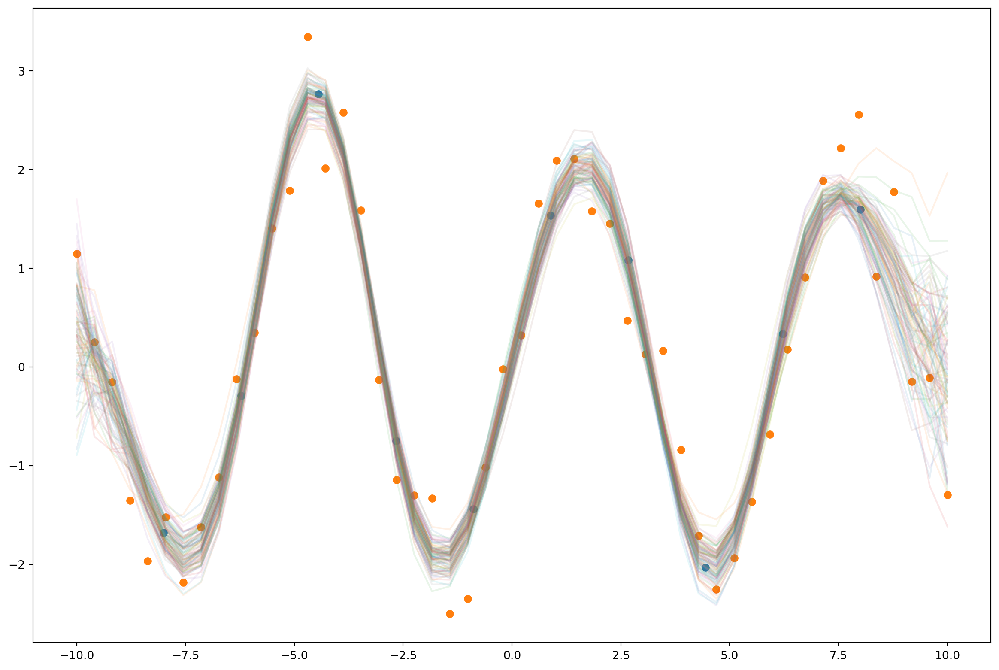
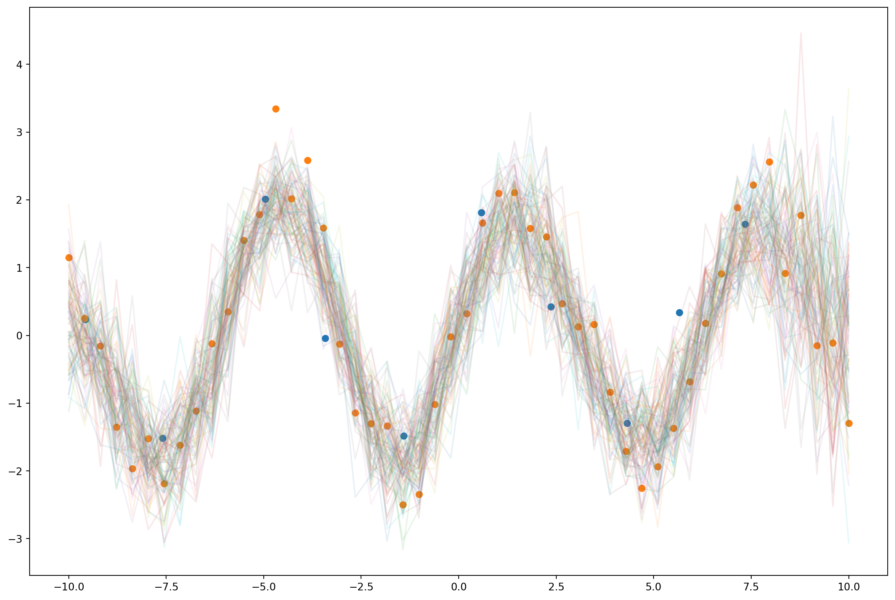
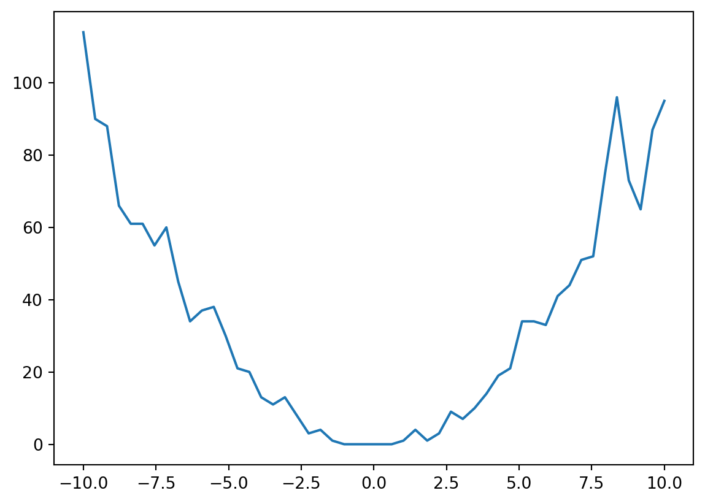
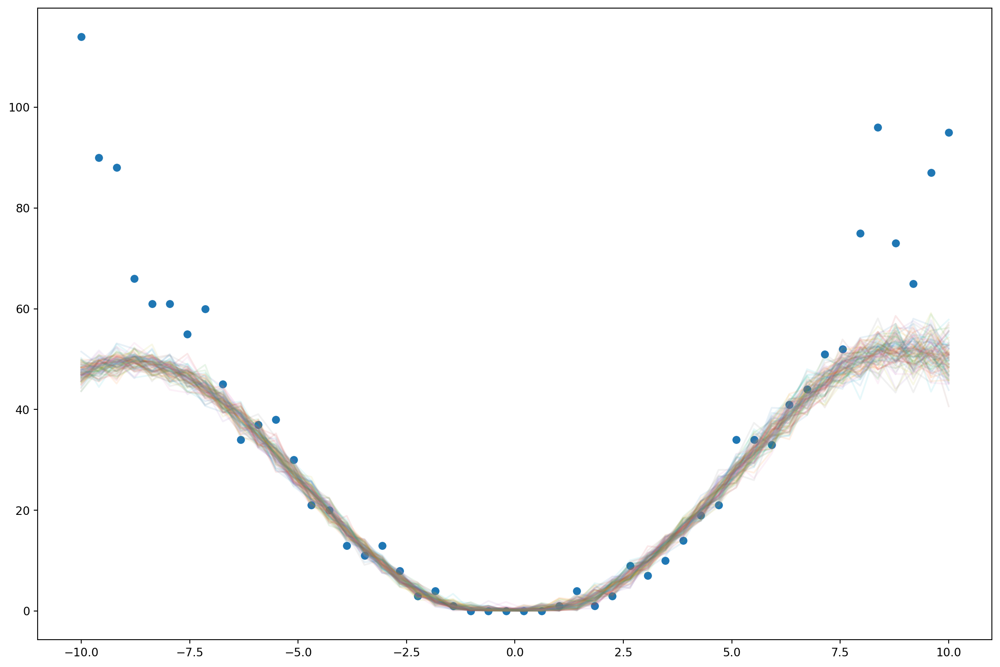

import pyro
import pyro.distributions as dist
from pyro import poutine
import torch
import torch.nn.functional as F
import matplotlib.pyplot as plt
from pyro.infer import SVI, Trace_ELBO, Predictive
from torch.distributions.transforms import LowerCholeskyTransform
import gpytorch as gpThis notebook introduces Fully Independent Training Conditional (FITC) sparse variational Gaussian process model. You shouldn’t need any prior knowledge about Gaussian processes- it’s enough to know how to condition and marginalize finite dimensional Gaussian distributions. I’ll assume you know about variational inference and Pyro, though.
Say we observe some data \(x_1, x_2, \dotsc\).
xs = torch.linspace(-10, 10, 50)Assume there’s an unknown function \(f\) that maps each data point \(x_i\) to an unknown value \(f_i\).
fs = 2*torch.sin(xs)And each \(f_i\) is associated with an observed noisy version \(y_i\).
ys = fs + 0.4*torch.randn(xs.shape)plt.plot(xs, ys);
Say we have some additional inputs \(x_1^\ast, x_2^\ast, \dotsc\) and we want to estimate the associated \(f^\ast_1, f^\ast_2, \dotsc\). We’ll assume that the \(f_i\) and \(f^\ast\), along with a latent vector \(u\) of outouts at known inputs \(z\), are all jointly Gaussian. The \(u_i\) are known as inducing points. We’ll ensure that the conditional covariance structure is sparse, however: \(f_i\) will be conditionally independent given \(u\). This will keep the computation of the posterior tractable, even when we have a large number of training points \(f\).
Specifically, say \[ \begin{bmatrix} u \\ f \\ f^* \end{bmatrix} \sim \mathcal{N}\left(0, \begin{bmatrix} K_{uu} & K_{uf} & K_{u*} \\ K_{fu} & D_{ff} & K_{fu}K_{uu}^{-1}K_{u*} \\ K_{*u} & K_{*u}K_{uu}^{-1}K_{uf} & K_{**} \end{bmatrix} \right) \]
The expressions for conditionally independent covariances keep popping up, so We’ll abbreviate \(K_{au}K_{uu}^{-1}K_{ub}\) as \(Q_{ab}\). Using the standard Gaussian conditioning formula, we find that
\[ \begin{bmatrix} f \\ f^* \end{bmatrix} \, \bigg \vert \, u \sim \mathcal{N} \left( \begin{bmatrix} K_{fu}K_{uu}^{-1}u \\ K_{*u}K_{uu}^{-1}u \end{bmatrix} , \begin{bmatrix} D_{ff} - Q_{ff} & Q_{f*} \\ Q_{*f} & K_{**} - Q_{**}\end{bmatrix} \right) \]
We’ll choose \(D_{ff}\) so that \(D_{ff} - Q_{ff}\) is diagonal. Specifically, we’ll let \(D_{ff} = Q_{ff} + \text{Diag}(I - Q_{ff})\).
It remains to choose the dense covariances \(K_{uu}\). We’ll choose a covariance structure that makes \(u_i\) and \(u_j\) close when \(z_i\) and \(z_j\) are.
def kernel(a,b):
return torch.exp(-0.5*((a[:,None] - b[None,:])/2)**2)z = torch.linspace(-8, 8, 10)k_uu = kernel(z, z)
k_uu_chol = torch.linalg.cholesky(k_uu)
k_uu_inv = torch.cholesky_inverse(k_uu_chol)
k_fu = kernel(xs, z)
k_ff_given_u = torch.diag(torch.eye(fs.shape[0]) - (k_fu @ k_uu_inv @ k_fu.T)) + 1e-5
conditioner = k_fu @ k_uu_invThis gives us a fully generative prior for the function values \(f\) and inducing points \(u\).
def model(obs):
u = pyro.sample("u", dist.MultivariateNormal(torch.zeros(k_uu_inv.shape[0]), precision_matrix= k_uu_inv))
with pyro.plate("data"):
f = pyro.sample("f", dist.Normal(conditioner @ u, k_ff_given_u))
return pyro.sample("obs", dist.Normal(f, 0.16), obs=obs)We’ll assume that the posterior over \(u\) given our observations \(y\) is Gaussian as well.
lower_cholesky = LowerCholeskyTransform()def guide(obs):
M = k_uu_inv.shape[0]
m = pyro.param("m", torch.randn(M))
S = lower_cholesky(pyro.param("S", k_uu_chol))
return pyro.sample("u", dist.MultivariateNormal(m, scale_tril=S))This guide only covers \(u\), not \(f\). The conditional distribution of \(f\) given \(u\) will be the same as in the prior because it’s independent of \(y\). To let the model know that the associated guide has the same conditional distribution for \(f\), we use Pyro’s block function. As \(y\) here is Normally distributed about \(f\), we could analytically marginalize out \(f\). But we’ll keep things simple and use samples of \(f\) instead.
marginalized_model = poutine.block(model, hide="f")Training
We can fit the parameters in our variational approximation to maximize the ELBO using a standard Pyro training loop.
adam = pyro.optim.Adam({"lr": 0.03})
svi = SVI(marginalized_model, guide, adam, loss=Trace_ELBO())
pyro.clear_param_store()
for j in range(1500):
loss = svi.step(ys)
if j % 100 == 0:
print(loss)7876.168869018555
1096.6914720535278
678.0399866104126
410.22321701049805
347.35849380493164
295.4183578491211
338.96053409576416
299.43280029296875
245.88098907470703
397.6497116088867
272.0316352844238
280.7838191986084
233.17931365966797
235.1186876296997
250.67036628723145pred = Predictive(model, guide=guide, num_samples=100)
samples = pred(None)['f'].numpy()
plt.figure(figsize=(15,10))
plt.plot(xs, samples.T, alpha=0.1);
plt.scatter(z, pyro.param("m").detach().numpy())
plt.scatter(xs.numpy(), ys.numpy());
Using GPytorch
This approach to inference is also available in pre-packaged from the GPytorch library.
class GPModel(gp.models.ApproximateGP):
def __init__(self, num_inducing=10):
variational_strategy = gp.variational.VariationalStrategy(
self, torch.linspace(-8, 8, num_inducing),
gp.variational.CholeskyVariationalDistribution(num_inducing_points=num_inducing))
super().__init__(variational_strategy)
self.mean_module = gp.means.ConstantMean()
self.covar_module = gp.kernels.ScaleKernel(gp.kernels.RBFKernel())
def forward(self, x):
mean = self.mean_module(x)
covar = self.covar_module(x)
return gp.distributions.MultivariateNormal(mean, covar)gp_model = GPModel()
def guide(x, y):
pyro.module("gp", gp_model)
with pyro.plate("data"):
pyro.sample("f", gp_model.pyro_guide(x))
def model(x, y):
with pyro.plate("data"):
f = pyro.sample("f", gp_model.pyro_model(x))
return pyro.sample("obs", dist.Normal(f, 1.), obs=y)
gp_model.train();
adam = pyro.optim.Adam({"lr": 0.03})
svi = SVI(model, guide, adam, loss=Trace_ELBO(retain_graph=True))
pyro.clear_param_store()
for j in range(1000):
gp_model.zero_grad()
loss = svi.step(xs, ys)
if j % 100 == 0:
print(loss)113.40755844116211
71.39605712890625
74.9711046218872
68.54665279388428
76.04235744476318
78.64530992507935
73.61101055145264
75.58063983917236
76.11869812011719
75.50554418563843gp_model.eval();
pred = Predictive(model, guide=guide, num_samples=100)
with torch.no_grad():
samples = pred(xs, None)['f']z = gp_model.variational_strategy.inducing_points.detach().numpy()
m = gp_model.variational_strategy._variational_distribution.variational_mean.detach().numpy()
plt.figure(figsize=(15,10))
plt.plot(xs.numpy(), samples.T.numpy(), alpha=0.1)
plt.scatter(z, m)
plt.scatter(xs.numpy(), ys.numpy())
Using a non-Gaussian Likelihood
We don’t always need \(y\) to be a version of \(f\) with added noise. We can use an arbitrary stochastic function of \(f\). For example, say we observe discrete count data instead. We’d like our likelihood to be Poisson.
gp_model = GPModel()def model(x, y):
with pyro.plate("data"):
f = pyro.sample("f", gp_model.pyro_model(x))
return pyro.sample("obs", dist.Poisson(F.softplus(f)), obs=y)latent_fs = xs**2ys = dist.Poisson(latent_fs).sample()plt.plot(xs, latent_fs)
plt.plot(xs, ys)
gp_model.train();adam = pyro.optim.Adam({"lr": 0.03})
svi = SVI(model, guide, adam, loss=Trace_ELBO(retain_graph=True))pyro.clear_param_store()
for j in range(1000):
gp_model.zero_grad()
loss = svi.step(xs, ys)
if j % 100 == 0:
print(loss)6083.084411621094
1781.496367931366
883.2217831611633
674.2122783660889
640.2556610107422
531.372368812561
520.1974086761475
500.5093593597412
485.35011196136475
544.6471176147461gp_model.eval();pred = Predictive(model, guide=guide, num_samples=100)with torch.no_grad():
samples = pred(xs, None)['f']plt.figure(figsize=(15,10))
plt.plot(xs, F.softplus(samples.T).numpy(), alpha=0.1)
plt.scatter(xs, ys)